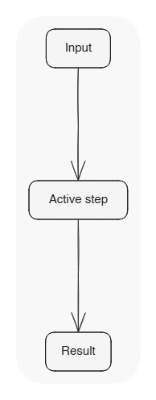
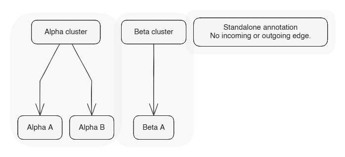
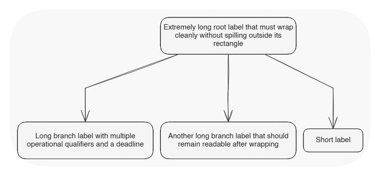
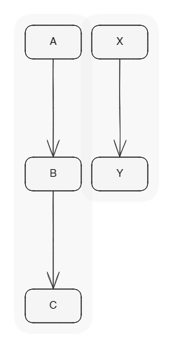
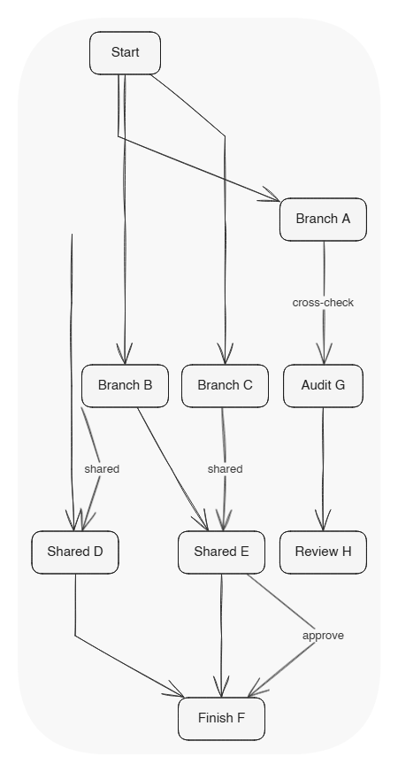
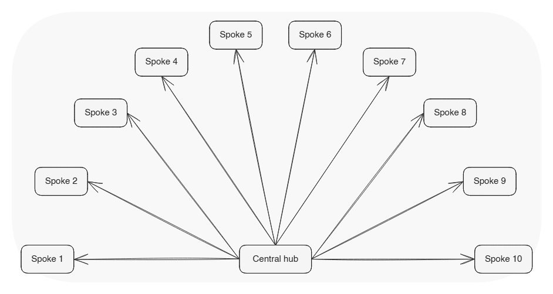
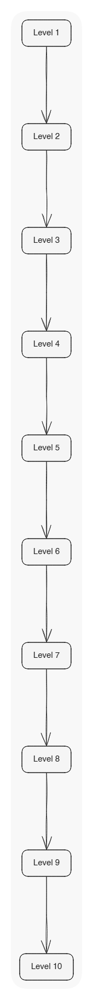
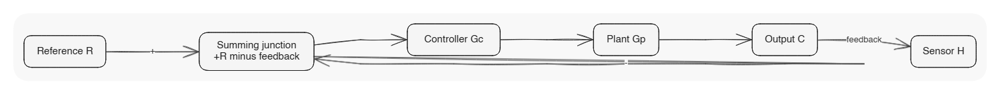
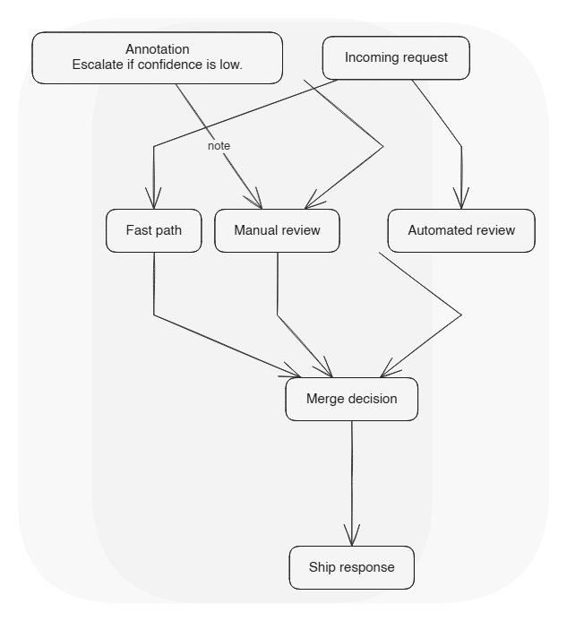

edge_deleted_elements
readability 1.00 | parse 1.00

edge_multiple_disconnected_clusters
readability 1.00 | parse 1.00

edge_long_labels
readability 1.00 | parse 1.00

edge_tiny_labels_sparse
readability 1.00 | parse 1.00

edge_dense_crosslinks_multiple_parents
readability 1.00 | parse 1.00

edge_hub_many_spokes
readability 1.00 | parse 1.00

edge_deep_tree
readability 1.00 | parse 1.00

edge_feedback_loop_control
readability 0.95 | parse 1.00

edge_parallel_branches_annotations
readability 1.00 | parse 1.00
